【转载】MobileNeRF论文解析
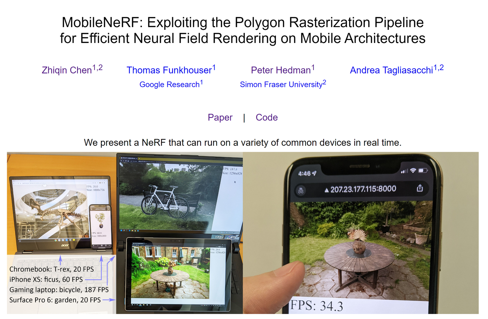
本文亮点：首次实现在移动设备上的实时神经渲染
# 1.预备知识
# 1.1 NeRF回顾
1）给定相机内外参数，可计算出一条穿过每个像素的射线。在该射线上采样N个点。
2）创建一个神经网络，输入为5维数据，输出为4维数据。将这N个点的空间坐标 (x,y,z)
，以及射线方向 (θ,ϕ) ,输入到该网络中，获得每个点的颜色和浓度 (r,g,b,σ)
3）将每个点的颜色按照浓度进行加权融合，计算得到该像素最终的颜色。
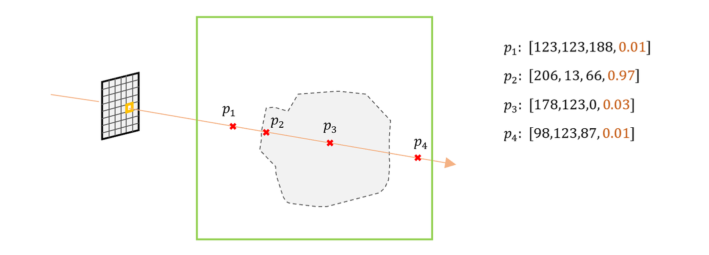
NeRF训练和推理非常缓慢。在推理时，渲染一张800x800的图像耗时1min左右， 原因是因为对于每个像素要采样N个采样点，每个采样点要经过一个MLP进行推理计算，导致计算量较大。
那么如何提升NeRF的推理效率？
把NeRF的MLP部分进一步拆解成Encoder和Decoder，见图2。 Encoder部分将一个空间坐标点编码成256的特征向量，然后通过Decoder部分，把特征向量以及视线方向解码成一个色彩值RGB和浓度值 σ 。若能将Encoder部分输出的特征向量提前存储，在实时渲染阶段，直接读取该特征向量，仅使用Decoder部分实时推理, 则会节省大量的计算。
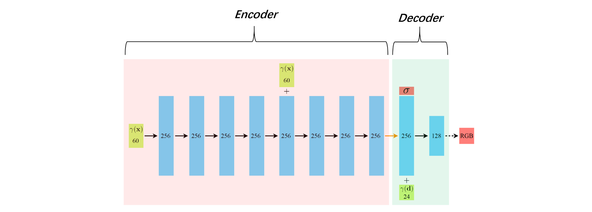
# 1.2 图形渲染基本原理
我们看到的渲染画面（例如游戏画面），一般由GPU的渲染管线来完成。这里仅介绍最简单的基本原理。感兴趣的可以去看闫令琪的Game101课程。
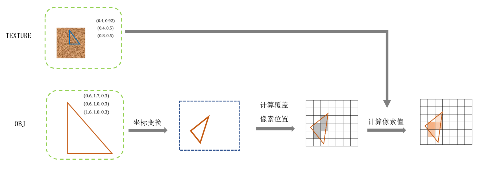
模型数据 ：模型的几何形状由一堆三角面片描述，每个三角面片由三个顶点构成。而每个三角面片的颜色存储在模型纹理图像中。模型会存储每个顶点的空间坐标，如图3左下的“OBJ”，以及每个顶点对应的纹理坐标，即每个三角网格面片对应着纹理图像中的一块三角区域，如图3左上的“TEXTURE”
模型数据要经过如下 渲染流程 ，如图3：
1）读取OBJ里的顶点3d坐标，以及对应的uv坐标
2）顶点坐标依次经过model, viewport, projection坐标空间变换，将3d坐标变成2d的屏幕坐标（像素坐标）
3）找出在屏幕坐标系下，当前三角面片覆盖的所有像素坐标，这一步也叫做光栅化。
4） 在已知每个顶点坐标的情况下，很容易获得每个像素坐标对应的纹理坐标（双线性插值，Mipmap插值等等）
5）根据纹理图像中对应坐标的颜色，赋值给该像素
其中, 步骤（2）和（5），在现代GPU渲染管线里，允许写脚本进行定制化操作，这部分代码叫做“ shader ”
例如，美术提供了一个带彩色纹理的怪物，但是当怪物死亡时，可以通过shader代码实现黑白色的怪物外表，而不需要美术同时提供黑白色的纹理。
而光栅化，可以看成是对于每个像素发射一条穿过相机中心的射线，找出该射线与三角网格的交点。当射线与场景中多个网格存在交点时，一般会使用离相机最近的交点作为唯一交点。这类似于NeRF的光线路径采样时，仅采样离相机最近的表面交点。
伪代码如下：
# 3D模型的定义
class Model3D:
list_vertice_coord # 所有顶点坐标
list_uv_coord # 所有纹理坐标，与顶点位置一一对应
list_face_index # 每个三角面片由哪几个顶点组成
Model3D # 加载模型顶点数据
TEXTURE # 加载模型纹理数据
# 采用Shader来对渲染管线进行定制化
class Shader:
# 处理每个顶点坐标
def vert(vertice):
# 变换模型坐标到屏幕坐标
screen_coord = MVP(vertice)
# 此处可以写其他顶点操作，例如膨胀
return screen_coord
# 计算每个像素值
def frag(uv):
rgb = TEXTURE[uv] # 根据uv坐标，获得纹理图像上的像素值
# 此处可以写其他颜色操作，例如转成黑白色
return rgb
for each_face in Model3D.list_face_index:
# 获得每个三角面片的顶点坐标和uv坐标
vertices = get_vertices(each_face) # 3x3
uvs = get_uvs(each_face) # 3x2
# 将顶点坐标由模型坐标系变换到屏幕坐标系
screen_coords = Shader.vert(vertices) # 3x3，此处还保留着每个像素的深度
# 当前三角面片在屏幕显示时，会覆盖哪些像素
covered_pixels = get_covered_pixels(screen_coords) # Nx2
# 计算像素值
for each_pixel_coord in covered_pixels
# 给定每个顶点的uv，插值计算当前pixel的uv
interpolated_uv = get_interpolated_uv(each_pixel_coord, uvs)
# 该像素上最终的色彩值
rgb = Shader.frag(interpolated_uv)
2
3
4
5
6
7
8
9
10
11
12
13
14
15
16
17
18
19
20
21
22
23
24
25
26
27
28
29
30
31
32
33
34
35
36
37
38
39
# 2.MobileNeRF的渲染过程
假如我们设计了一种NeRF，结构如下：
1）每条射线上的采样点位置和个数（且远少于原始NeRF）是已知的
2）每个采样点的位置特征向量（NeRF的Encoder部分输出）是预先存储好的
3）仅执行NeRF的Decoder推理
4）对于当前待渲染画面的每个像素，上述的计算是在GPU上并行的
那么这种新NeRF，相比原始NeRF，显然会大幅降低计算量。
MobileNeRF通过利用GPU渲染管线的光栅化过程，实现了这种能在移动设备上实时渲染的NeRF, 见图4与图5：
1）将整个场景的几何表面，使用非半透明的三角网格来表示。这意味着，对于待渲染画面的每个像素，会直接获得射线与三角面片的交点，作为整条射线路径上唯一的采样点
2）顶点对应的纹理图像，存储的不再是该顶点的颜色，而是该空间点的“空间特征”，即NeRF的Encoder输出特征
3）将NeRF的Decoder部分，写入到Shader里，可以称之为Neural Shader
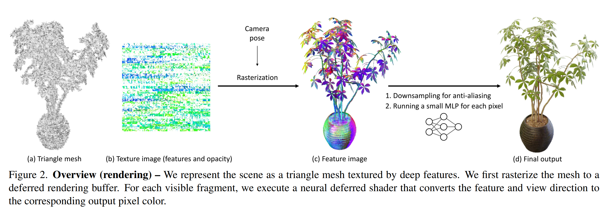
如图5， 因为纹理图像的每个像素仅能存储4个通道（RGBA）的数据，所以当Encoder输出8维特征时，需要分别使用两张纹理图像来表示。在Neural Shader中，把根据uv坐标读取的两个特征，以及射线方向，一起输出到一个浅层mlp中，最终解码出该像素的色彩值
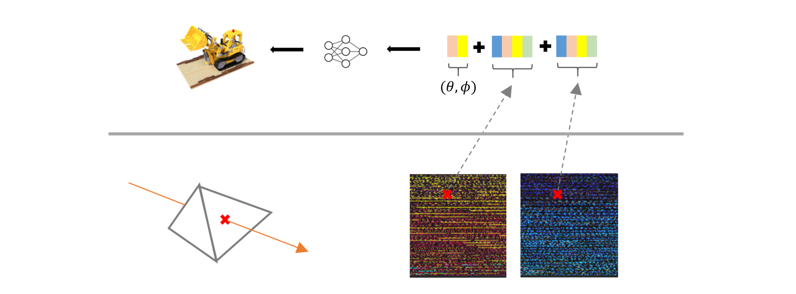
# 3. MobileNeRF的训练过程
为了实现上述的渲染过程，作者将训练分为三个阶段：
（1）初始化一个grid mesh，基于可微渲染思想，学习场景的几何结构，以及透明度 α 连续的 Radius Field
（2）将 α 二值化
（3）对grid mesh进行剪枝操作，保存为OBJ，以及烘培特征向量为纹理图像TEXTURE，保存Decoder的网络权重
# 3.1 训练阶段一
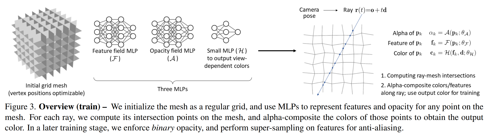
3.1.1 总览
（1）初始化一个形状如格子间的三维grid mesh, 见图6最左侧
（2）根据相机位姿以及像素坐标，计算一条射线
（3）射线与grid mesh的交点 pk 作为采样点, 见图6最右侧。这里与近似平均采样的原始NeRF策略不同
（4）创建3个MLP：
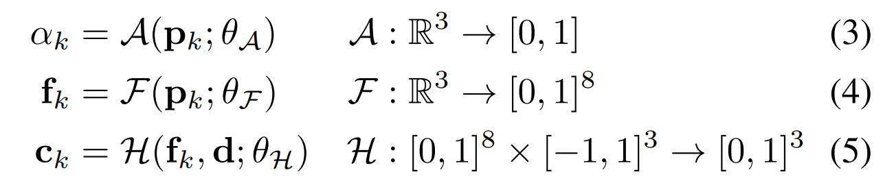
A ：预测采样点的透明度 α （ 注意 ，此处非NeRF系列中的浓度 σ ）
F ：预测采样点的空间特征向量 fk ，即 F 是前面提到的 Encoder
H ：根据特征向量和视线方向，预测采样点的颜色 ck ，即 H 是前面提到的 Decoder
将每个交点的颜色 ck 按照透明度 αk 进行加权融合，获得该像素的预测值 C(r) ，然后与真值 Cgt(r)
计算L2 Loss。加权融合计算如下式：
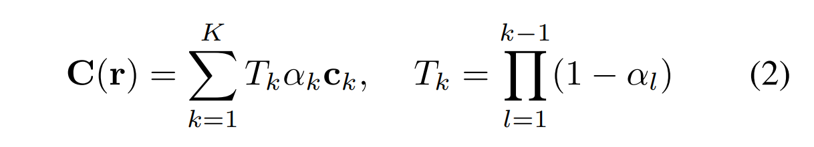
3.1.2 初始grid mesh的定义与优化
定义一个中心在原点，尺寸为1的PxPxPx3的voxel grid， 每个网格中设置一个点，作为顶点vertice，将相邻的4个vertice连接，组成mesh的face, 整个mesh被称为grid mesh：
MobileNeRF采用了可微渲染的思想，把vertice位置作为可训练的参数，通过反向传播loss，优化其位置，达到“三维重建”的目的。
可以将顶点位置理解为某个函数的“权重参数”，该函数负责计算射线与mesh的交点，那么最终的loss显然会推动顶点位置的变化： pk=P(r(tk));V)
作者通过正则化限制每个顶点的“活动范围”在格子内：
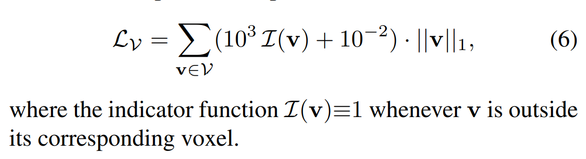
我个人的理解是，这么做可以防止学习到的顶点之间互相穿插:
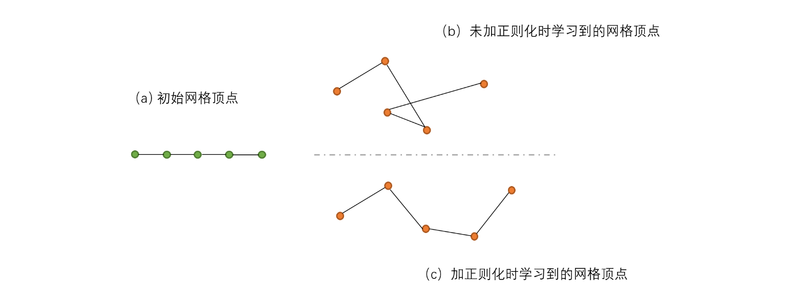
3.1.3 训练加速
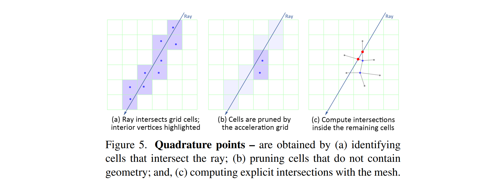
作者借鉴instant NGP，创建了另一个PxPxPx1的grid mesh，用于加速训练过程，见图9。每个网格用来预测当前网格内存在几何表面的可能性。加速过程如下：
（1）先在加速网格中找到射线穿过的grids
（2）根据加速网格的预测值，删除不含几何表面的grids
（3）在剩下的网格中，计算射线与mesh的交点
作者又增加了一个sparsity loss和smooth loss,
原始NeRF在训练时，对于未观测到的区域，或者背景区域，会因为缺乏足够的立体约束，导致生成了大量的“solid”噪点。通过引入sparsity 正则化（原文称为loss），会迫使上述区域变得“empty”, 如图10
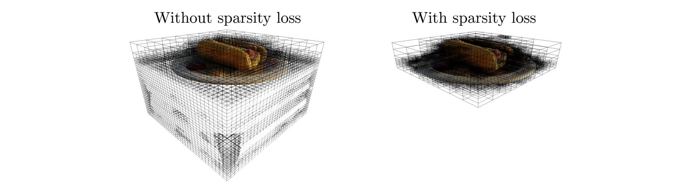
在第一阶段训练完毕后，我们获得了：
（1）顶点位置优化过后的 grid mesh ， 充当整个场景的“三维几何结构”
（2）透明度 α 在0到1之间的神经网络 A
（3）NeRF Encoder部分： F
（4）NeRF Decoder部分： H
# 3.2 训练阶段二
上一阶段训练完毕后，每个采样点的透明度 α 为0到1之间。因为在渲染引擎里，处理半透明的mesh，比不透明的要更耗时，因此需要将透明度进行二值化——0或者1。将 αk 修改如下：
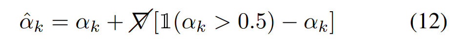
" Please note that the gradients are transparently passed through the discretization operation (i.e. ∇αˆ ≡ ∇α), regardless of the values of αk and the resulting αk∈{0,1} "
为了让训练更稳定，在第二阶段的训练过程中，作者既渲染合成透明度二值化时的最终图像 C^(r) ，又渲染合成透明度连续时的图像 C(r) , 然后同时计算两者的loss：
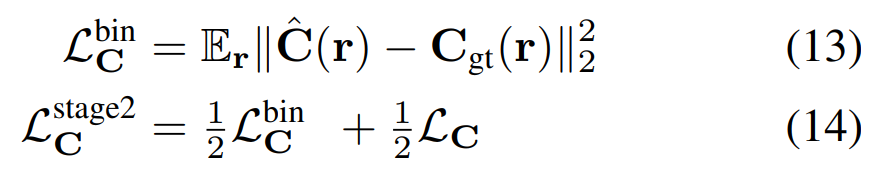
当loss（14）收敛后，会固定住其他参数，仅finetune神经网络 F 和 H
# 3.3 训练阶段三
接下来，需要把前两阶段训练好的几何结构grid mesh保存为OBJ，以及将Encoder部分( F )输出的特征向量烘培到纹理图像中。
（1）将训练图像完全无法“看到”的face删除。通过下表，可以看出95%以上的grid，都要被删除
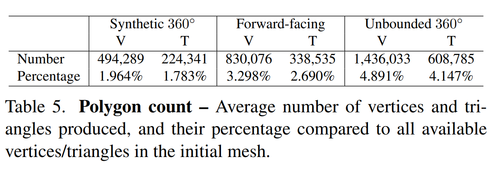
（2）将剩余的每个face的顶点数据保存到OBJ中
（3）给每个face（四边形）分配一个分辨率为KxK的纹理区域（texture patch），因为face的顶点坐标是已知的，那么很容易计算出texture patch上每个像素对应的空间坐标，从而根据公式（4）获得相应的特征值。这样，就完成了烘培特征纹理的工作。
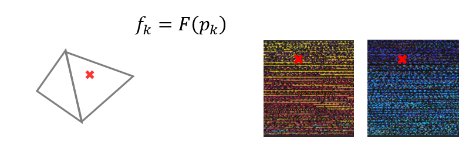
（4）保存Decoder网络的权重
# 3.4 抗锯齿
略
# 4. 优缺点
优点：
- 第一次实现了移动设备上的实时神经渲染
- 通过引入OBJ和TEXTURE，使得很多传统图形优化技术，可以直接使用。例如对大型场景的LOD，九宫格加载等
缺点：
- 仅通过一个采样点来代表整条光线路径，当需要表现出半透明或者高光等复杂光学现象时，需要较高的模型精度以及准确的材质模型，mobileNeRF并不擅长解决后两者。
- 通过固定分辨率的网格，来学习表达整个空间，会导致两个问题：（1）细节分辨率不够（2）大块平坦区域的mesh过于碎片化，顶点数过多。
- 为了降低最终的obj顶点数量，在第三个阶段，删除了对于训练图像完全不可见的face。这会要求采集训练图像时，需要覆盖几乎所有渲染阶段需要的相机角度。否则会在渲染画面中出现大量的空洞。另外，这种删除策略也会损失模型的“泛化能力”，表现是在相邻相机角度切换时，出现“画面突变”
- 训练时间太长：8卡A100，训练24小时左右